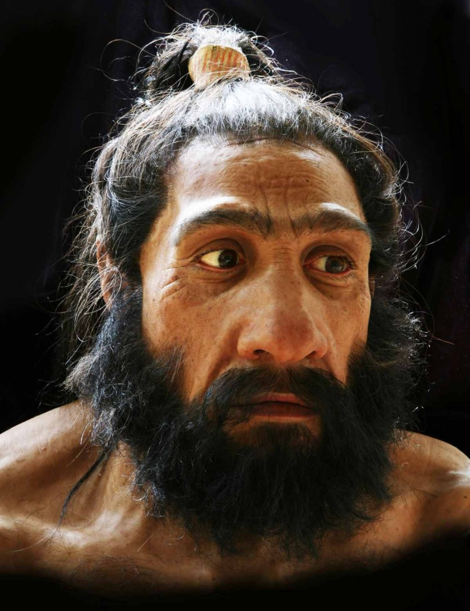
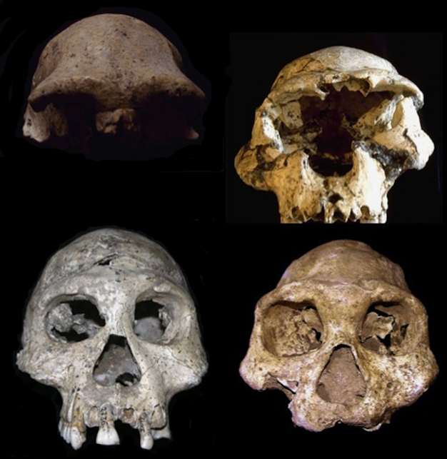

The timeline of the Homo geunus copyright Smithsonian Institution Retrieved from: Humanorigins.si.edu
The timeline of the Homo geunus copyright Smithsonian Institution Retrieved from: Humanorigins.si.edu
The Homo genus was once more versatile than it is today. Why is the most prevalent human species today Homo sapiens rather than the longest-living member of the family, Homo erectus? The key may be the implementation of agriculture and the need for the species to learn to coexist in larger social groups.
From the Smithsonian Institute:
The species that you and all other living human beings on this planet belong to is Homo sapiens. During a time of dramatic climate change 200,000 years ago, Homo sapiens evolved in Africa. Like other early humans that were living at this time, they gathered and hunted food, and evolved behaviors that helped them respond to the challenges of survival in unstable environments.
Anatomically, modern humans can generally be characterized by the lighter build of their skeletons compared to earlier humans. Modern humans have very large brains, which vary in size from population to population and between males and females, but the average size is approximately 1300 cubic centimeters. Housing this big brain involved the reorganization of the skull into what is thought of as "modern" -- a thin-walled, high vaulted skull with a flat and near vertical forehead. Modern human faces also show much less (if any) of the heavy brow ridges and prognathism of other early humans. Our jaws are also less heavily developed, with smaller teeth.
Other Species of the Homo Genus

Homo Neanderthalensis from Smithsonian Museum Human Origins Collection.


(Below Image)From Cranial and mandibular fossils from Dmanisi, Georgia.Fossils dated to roughly 1.7 million years ago, demonstrate morphological variation in Homo erectus from a single site.© 2012 Nature Education Courtesy of Adam P. Van Arsdale.
Here is information about Homo Erectus from some text:
Eugene Dubois first identified and described a new human-like set of Indonesian fossils at the end of the 19th century, naming the specimens Pithecanthropus erectus (upright, ape-man) because of their combination of bipedality and a brain size much smaller than living humans. Dubois had specifically been looking for the missing link between apes and humans, and for him the combination of a human-like body and ape-like brain represented just that (Shipman 2002). Subsequent discoveries in the 1920s and 1930s from the site of Zhoukoudian, China, of fossils with similar characteristics-originally designated Sinanthropus pekinensis-raised the question of a possible evolutionary relationship between these regional samples. Today, these two samples, along with a much larger collection of fossils from Asia, Africa, and Europe, are most commonly referred to simply as Homo erectus.
What is the evolutionary relationship among fossils that share many similarities, but also subtle differences, separated across time and space? This question, prompted by the early Chinese and Javan fossils, remains an active research question today for the much larger sample of fossils assigned to H. erectus. Whether or not a sample from one region, for example Africa, part of a polytypic, geographically widespread lineage (Homo erectus), or whether it is part of a related, but different species, is a debated topic and reveals much about the evolutionary pattern of the species (Rightmire 1998). For example, some researchers argue that H. erectus is restricted largely to Eastern and Southeast Asia, consistent with the original fossils attributed to the taxon. In that case, the bulk of its representatives lived from the end of the Lower Pleistocene through the Middle Pleistocene (~1.4-0.2 mya). From this perspective, earlier fossils from Western Asia (e.g., Dmanisi, Georgia; Figure 2) and Africa (e.g., Koobi Fora, Kenya) that are similar to the classic Asian H. erectus, but also have more ancestral traits, might be considered a separate lineage (often called Homo ergaster). Middle Pleistocene remains from Europe might be a second or third separate lineage (Homo heidelbergensis). In this view, the ecological niche occupied by these species is more limited, leading to the isolation, and ultimately speciation, among different regional populations.
From Adam P. Van Arsdale (Department of Anthropology, Wellesley College) © 2013 Nature Education
Citation: Van Arsdale, A. P. (2013) Homo erectus - A Bigger, Smarter, Faster Hominin Lineage. Nature Education Knowledge 4(1):2<.a>